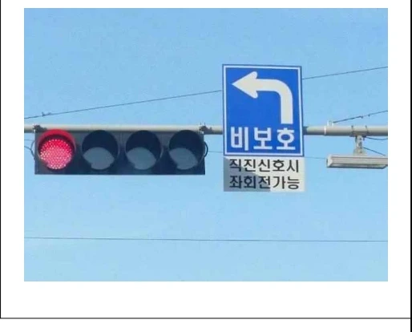

935. Дараах замын хөдөлгөөний аюулгүй байдлын байгууламж суурилуулсан уулзвар дээр зорчих аргуудаас зөв нь аль вэ?

- ①Зөвхөн зүүн эргэх ногоон суман гэрэл ассан үед зүүн эргэж болно.
- ②Зүүн эргэх дохионы үед зүүн эргэнэ, эсвэл чигээрээ явах дохионы үед эсрэг чиглэлээс ирж буй тээврийн хэрэгсэлд саад болохгүйгээр зүүн эргэж болно.
- ③Гэрлэн дохионоос үл хамааран эсрэг чиглэлээс ирж буй тээврийн хэрэгсэлд саад болохгүйгээр зүүн эргэж болно.
- ④Шар гэрэл ассан үед эсрэг чиглэлээс ирж буй тээврийн хэрэгсэлд саад болохгүйгээр зүүн эргэж болно.
Хариулт харах
Зөв хариулт
② Зүүн эргэх дохионы үед зүүн эргэнэ, эсвэл чигээрээ явах дохионы үед эсрэг чиглэлээс ирж буй тээврийн хэрэгсэлд саад болохгүйгээр зүүн эргэж болно.
Үндэслэл
Замын хөдөлгөөний тухай хуулийн 5 дугаар зүйл, уг хуулийг хэрэгжүүлэх журмын 6, 8 дугаар зүйл: зүүн эргэх ногоон сум ассан үед зүүн эргэж болно. Мөн зорчихыг зөвшөөрсөн дохиотой үед эсрэг чиглэлээс ирж буй тээврийн хэрэгсэлд саад учруулахгүйгээр зүүн эргэж болно.
Үндэслэлийн текст нь машин орчуулга.